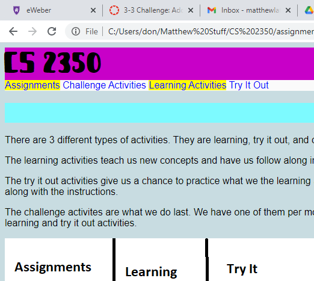

Activity Page
Story Layout 1
Story Layout 2
My Schedule
In this challenge activity we had to make an
html page and mark it up with css. We then had to copy
the html from the first into a new file and make a new css file to make
a seperate page where the content in
the first and second is the same but doesn't look the same.
We also had to make a
table that has our daily schedule on it.
Skills that I used were formatting the page to be fluid so the elements
are able to position themselves based on the dimensions of the browser. I also used skills
of floating elements and controlling their widths.
I like that I was able to make a story that I wanted and include
the content that I wanted.
It was hard for me to get the elements positioned how I want and go next to images.
Add Graphic Design
Home page of Assignments website

In this project I used muliple new skills. I added shadow to boxes and text. I also used
new skills of tranforming elements so they dispaly at angles on pages and there is some
perspective added to them. I also added an image with an image map. I added background images
including multiple in the same element. I also added gradients to my website.
I like the design elements I was able to add to make the website look more interesting and have
more designs to it. This project was fun because I was able to try out new skills that I enjoyed being
able to experiment with.